self-contained ZIP
.NET 런타임은 포함됩니다. ZIP 전체를 압축 해제해 실행하며, 서명 설치 프로그램/MSIX나 win-arm64 패키지는 아직 없습니다.
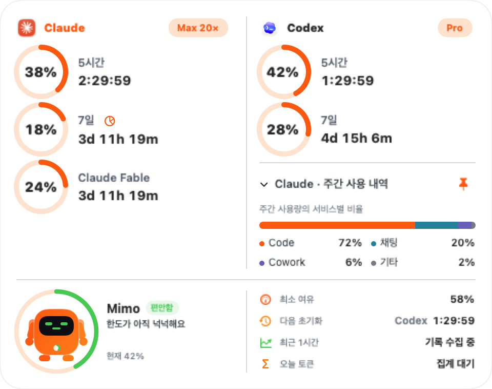
macOS 1.7.1 · 아이콘 업데이트
@jwoo5377의 새 아이콘을 앱과 홈페이지에 적용했습니다. 기존 6개 테마와 위젯, 알림 기능은 그대로 유지합니다.
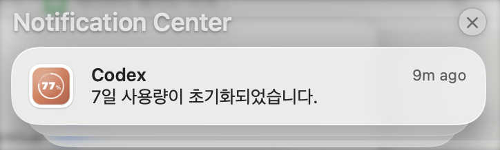
macOS 1.7.0 · 새 게이지 디자인과 표시할 서비스
기존 당근, 토스, 하이브리드 테마와 저장된 선택을 유지합니다. 새로 추가된 도넛, 헤일로 바, 오라까지 총 6가지 중 고르고, Claude와 Codex 중 쓰는 서비스만 켜 둘 수 있습니다. 아래 화면은 새 게이지 디자인의 데모 데이터 예시입니다.
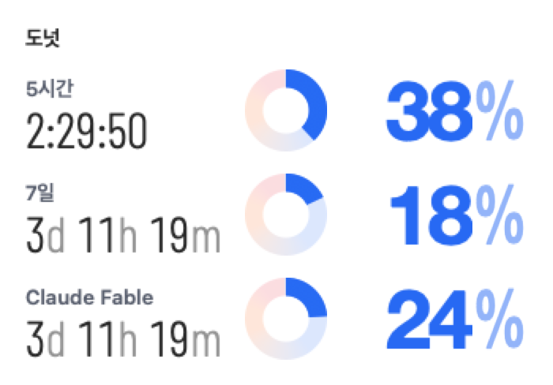
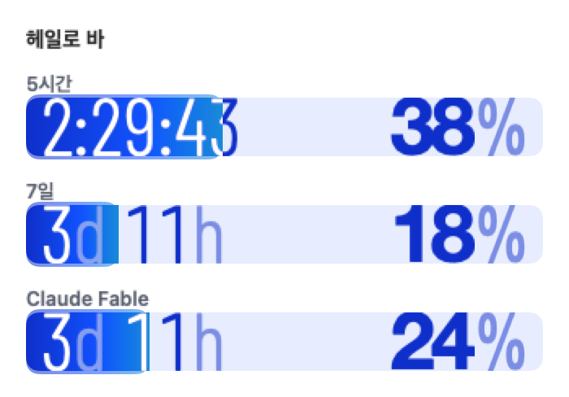
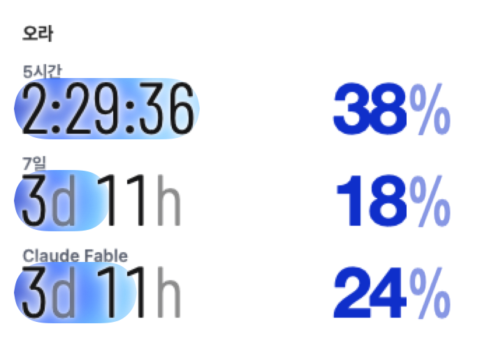
기존 테마는 그대로, 새 디자인은 선택으로. 당근의 주황 링과 토스·하이브리드의 기존 막대 표시를 유지합니다. 새 게이지 3개는 같은 행 높이를 사용하며, 주황과 빨강은 경고와 위험에 사용합니다. 기존 테마로 돌아오면 창 크기도 해당 레이아웃에 맞춰집니다.
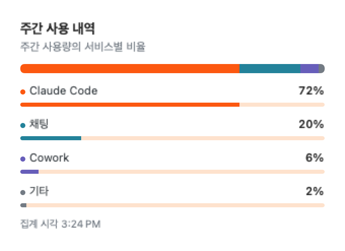
위젯을 끌어도 움직이지 않던 문제를 고쳤고, 옮긴 위치는 다음 실행에도 유지됩니다. 고른 테마와 사용 기록 등 기존 설정은 업데이트 후에도 그대로입니다. Codex 한도 선택과 Claude 로컬 토큰 중복 집계도 보완했습니다.
위젯에서도 Claude의 7일 줄이나 주간 구성 제목에 마우스를 올리면 구성이 펼쳐집니다. 가로 배치에서는 Codex 아래, 나머지 Claude 위젯에서는 Claude 사용량 아래에 나타납니다. 핀 버튼으로 펼침을 고정하거나 해제할 수 있고, 선택은 재실행 후에도 유지됩니다. Codex 전용 위젯에는 Claude 구성을 표시하지 않습니다.
두 계정, 한 화면
Claude와 Codex를 독립적으로 조회합니다. 한쪽 연결이 끊겨도 다른 쪽 사용량은 그대로 유지되고, 한쪽만 쓴다면 설정에서 다른 쪽을 꺼 둘 수 있습니다.
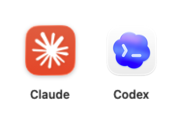
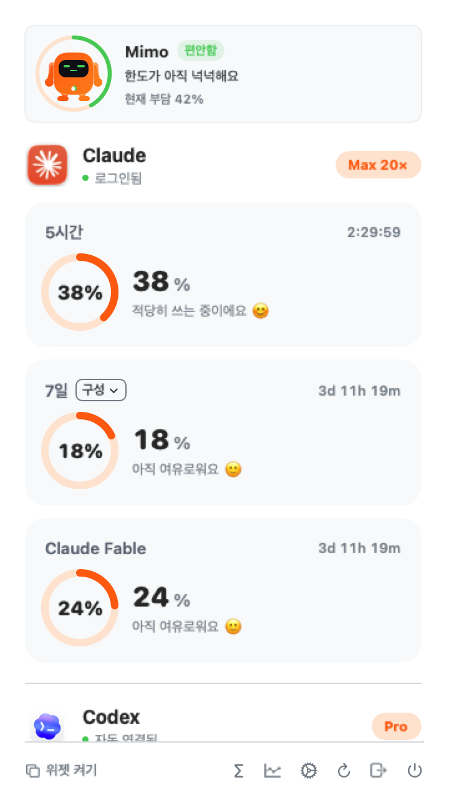
내 화면에 맞게
작업 공간과 확인 습관에 맞춰 네 가지 위젯 배치를 고를 수 있습니다. 가로 배치는 두 서비스의 사용량을 위에, 펫·요약 정보를 아래에 나란히 배치합니다. 위젯은 끌어서 옮길 수 있고, 옮긴 위치는 다음 실행에도 유지됩니다. 서비스를 하나만 켜면 위젯은 한 장으로 표시됩니다.
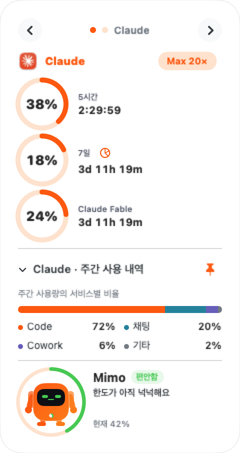
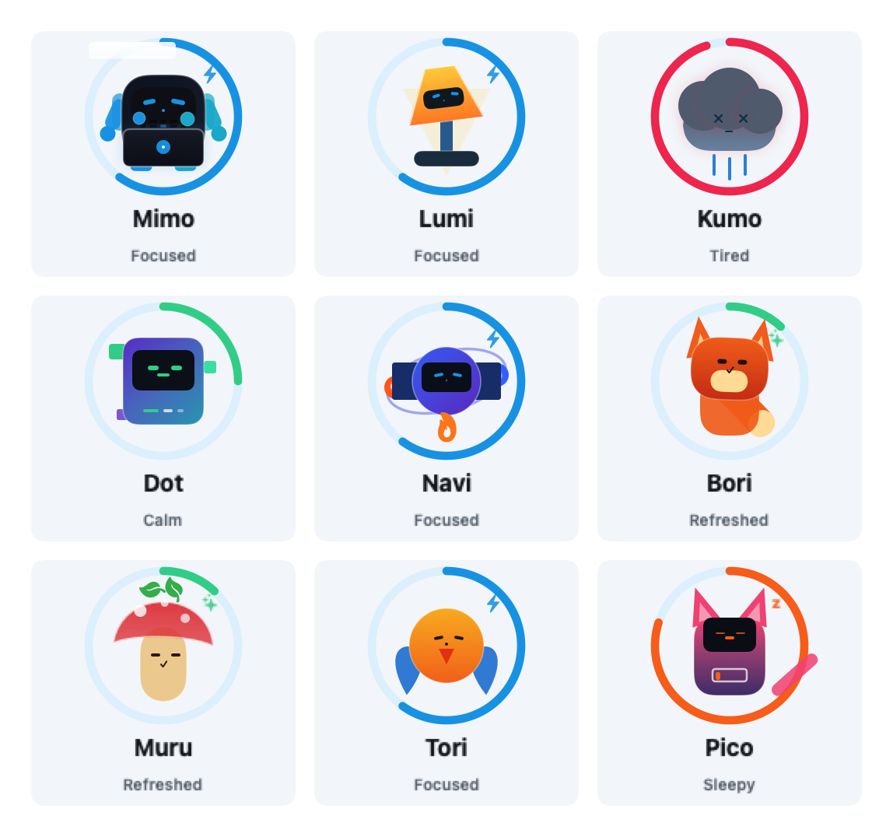
아홉 친구, 하나의 정확한 기준
Mimo부터 Pico까지 하나를 고르세요. 같은 퍼센트와 증가 속도를 읽지만 각자 노트북, 조명, 구름, 픽셀, 궤도, 새싹, 날개, 배터리로 상태를 표현합니다.
설정의 9개 미리보기는 정적으로 렌더링하고 실제 선택한 펫 하나만 움직입니다. 자동 모드는 위젯을 숨기면 렌더링을 멈춥니다.
내 Mac 안의 14일
1시간, 24시간, 7일, 14일을 오가며 Claude와 Codex, Fable과 서버가 제공한 모델별 한도를 각각 비교합니다. Claude 주간 사용 구성은 주간 사용량의 서비스별 비율이며, 별도 한도나 펫의 최고 사용률에 포함하지 않습니다.
오늘 토큰은 표시 중인 서비스가 모두 집계됐을 때 합계를 표시합니다. 미제공 데이터는 0이 아닌 집계 대기로, 한쪽 수치만 있으면 일부 집계로 구분합니다. 상세 화면에서는 서비스별 정확한 수치와 Codex의 최근 서버 집계 날짜를 확인할 수 있습니다. 설정에서 끈 서비스는 오늘 토큰, 펫 상태, 사용 기록에서 빠집니다.
max(5시간, 주간, 표시 중인 모델별 한도)
합계나 평균이 아니라 가장 큰 퍼센트 하나입니다. 끈 서비스는 계산에서 뺍니다.
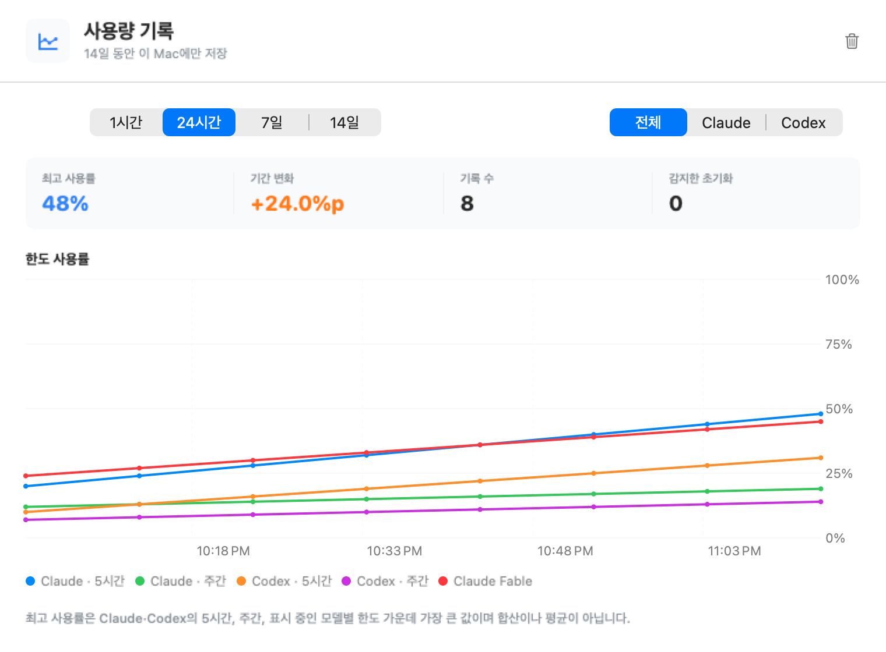
로컬 우선
프롬프트, 응답, 프로젝트명은 저장하지 않습니다. 사용량 기록은 기본으로 꺼져 있고, 켠 경우에도 이 Mac에만 최대 14일 보관됩니다. 설정에서 끈 서비스는 사용량을 조회하지 않습니다.
데이터·정책 문서 보기Google 로그인은 기본 브라우저에서 완료한 뒤 고급 연결에 본인의 Claude sessionKey만 입력합니다. 앱이 세션을 검증해 Keychain에 보관하며 브라우저 쿠키를 자동 수집하지 않습니다. 이메일 로그인도 유지됩니다.
70%·90% 경고, 서버 조회로 확인한 초기화, 연속 조회 실패 알림은 각각 선택해 켭니다. 설정의 알림 권한 요청·테스트 알림 버튼으로 확인하고, 거절한 권한은 macOS 알림 설정에서 변경합니다. 새 버전 안내는 선택형 하루 1회 GitHub Releases 확인이며 푸시 서버나 자동 설치는 없습니다.
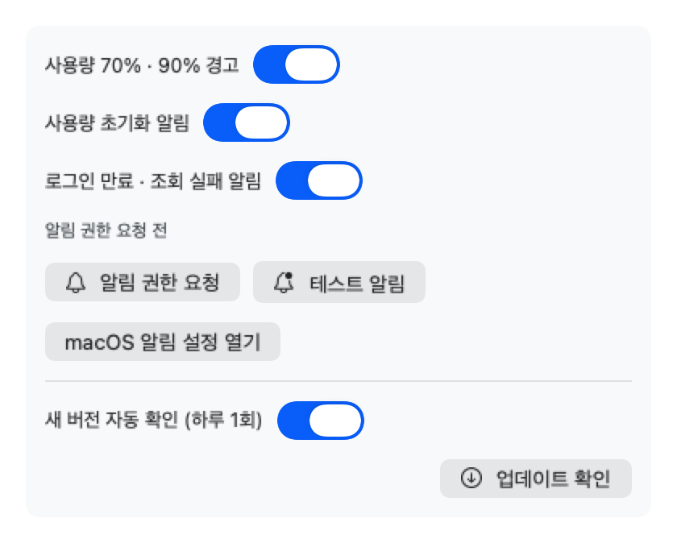
Codex Pet은 로컬 선택과 이미지 파일을 읽습니다. 클라우드로 이전된 펫은 로컬 원본이 남아 있을 때만 표시하며 클라우드에서만 존재하는 펫은 지원하지 않습니다. 개인 펫과 Codex 내장 이미지는 배포 파일에 포함하지 않습니다. 기존 9종 펫과 사용자의 선택은 유지합니다.
macOS 1.7.0은 115개 자동 테스트를 통과했고 실제 테스트 알림 수신도 확인했습니다. Google 고급 연결의 실계정 전체 흐름과 Windows 실기 검증은 별도입니다.
설치 전 확인
ChatGPT/Codex 앱 또는 호환 Codex 실행 파일이 설치되어 있고 로그인되어 있으면 됩니다. ClaudeUsage가 조회할 때 로컬 codex app-server를 직접 시작합니다.
현재 버전은 v1.7.1입니다.
아이콘을 폴더로 드래그합니다.
ad-hoc 서명이며 Developer ID 공증은 없습니다. 릴리즈의 SHA-256과 실행 안내를 확인하세요.
Windows 11 x64 · 개발자 알파
Windows 빌드는 알림 영역 플라이아웃과 네 가지 떠다니는 위젯 배치, Claude·Codex 독립 갱신, 3개 테마, 한국어/영어, 9종 펫과 선택형 로컬 기록을 제공하는 .NET 10 WPF 알파입니다.
.NET 런타임은 포함됩니다. ZIP 전체를 압축 해제해 실행하며, 서명 설치 프로그램/MSIX나 win-arm64 패키지는 아직 없습니다.
Codex는 설치된 codex app-server를 사용합니다. Claude는 WebView2 Evergreen의 격리 로그인 창을 사용하고 세션 쿠키 헤더를 현재 사용자 DPAPI로 암호화합니다.
켠 경우에만 5분 간격·최대 14일/4,200개 숫자를 저장하고, Claude Code JSONL에서는 오늘의 시각과 숫자형 usage 필드만 합산합니다.
%LOCALAPPDATA%\ClaudeUsage\settings.json%LOCALAPPDATA%\ClaudeUsage\claude-session.dat%LOCALAPPDATA%\ClaudeUsage\usage-history.json정책·호환성 주의: Claude 사용량은 Anthropic이 문서화하지 않은 claude.ai/api/organizations/.../usage endpoint에 의존하므로 예고 없이 변경되거나 제한될 수 있습니다. Codex-only 동작은 이 경로와 분리되어 있습니다.
Windows prerelease에 ZIP과 .zip.sha256가 함께 게시된 경우 체크섬을 비교한 뒤 실행하세요. 현재 macOS DMG가 이 사이트의 기본 다운로드입니다.
This is an unsigned, self-contained developer alpha for Windows 11 x64, separate from the stable macOS download. The .NET runtime is bundled; Claude sign-in requires Microsoft Edge WebView2 Evergreen. There is no signed installer/MSIX or ARM64 package yet.
Codex usage comes from the installed codex app-server without reading %USERPROFILE%\.codex\auth.json. Claude uses an isolated WebView2 sign-in profile and stores its session cookie encrypted for the current Windows user with DPAPI. Local history and scanning numeric usage fields from Claude Code JSONL are off by default.
Claude quotas depend on an undocumented Anthropic endpoint that may change or be restricted without notice. See the Windows guide for installation, SHA-256 verification, build commands, paths, and privacy details.